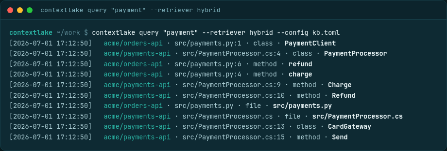

Searching semantically
Natural-language and hybrid graph-propagation retrieval: embed your code, tune the vector backend, and query across repos and languages.

Semantic search (optional) adds natural-language retrieval on top of the graph, so you can find code by
what it does even when you don't know its name. Set enabled = true under [embeddings] in the config,
run contextlake kb embed to vectorize the indexed nodes into a local store, and serve then exposes two
retrieval tools:
semantic_searchfor queries where the exact symbol name is unknown.hybrid_search, which seeds Personalized PageRank with the embedding hits and propagates relevance across the graph (HippoRAG-style) to surface structurally related nodes, a function's callers, a package's dependents, that a pure semantic match would miss.
flowchart LR
N[("indexed definitions
and endpoints")] --> EMB["kb embed"] --> V[("vectors")]
Q(["a natural-language query"]) --> A{"any content term
known to the index?"}
A -->|no| NONE(["no results, and the terms
it could not find"])
A -->|yes| R["semantic or hybrid retrieval"]
V --> R
G[("the graph")] -.->|"hybrid propagates
relevance across it"| R
R --> H(["cited hits: repo, file:line,
kind, name"])
--retriever fts is the third path: keyword-only, so it reads no vectors and needs no floor of its own.
Where the vectors come from. provider defaults to auto, which uses a local Ollama when the daemon
is reachable and already has the configured model pulled, and otherwise the built-in CPU embedder (the
kb-local extra). If neither is available it embeds nothing rather than reaching for a network service.
Both of those run on your machine, so on the defaults your code never leaves it; name provider =
"openai" explicitly if you want a hosted model instead.
Backends and tuning#
The vector store uses an exact pure-Python cosine scan by default; install the optional ANN backend with
pip install "contextlake[kb-vec]" (sqlite-vec) for larger workspaces. Three [embeddings] keys tune it:
vector_backend(defaultauto) pickssqlite-vecwhen that extra is installed and falls back to the pure-Pythonbrutescan otherwise; force one withvector_backend = "sqlite-vec"or"brute".vector_chunk_size(the sqlite-vecvec0KNN chunk size, default 1024; clamped to a multiple of 8) is applied when the vector store is first created, so re-embed from scratch to change an existing store.batch_size(default64) sets how many nodes are embedded per batch.
What gets embedded and which model to pick are in Embeddings and models.
What a query returns#
A single query returns cited hits (repo · file:line · kind · name) that span repositories
and languages, here the C# and Python payment paths together. --retriever fts|semantic|hybrid
picks keyword, vector, or graph-propagation ranking.

When a query finds nothing#
A vector index has no concept of "no match". It returns its k nearest however far away they are, and every one of them is a real node with a real file and line, so an answer about nothing you asked reads as cited and checkable.
--retriever semantic|hybrid therefore refuses a query when not one of its content terms
appears anywhere in the index, and names the terms it could not find:
No matches for 'SamlAssertionValidator': nothing indexed matches 'SamlAssertionValidator'.
No results are shown rather than the nearest k, which would all be real nodes and none of
them about this query. Index the repo that should answer it, or retry with a term the graph knows.
One indexed term anywhere in the query is enough to let the hits through, so ordinary
multi-word questions are unaffected. The exit code stays 0: "nothing in here is about that" is a
valid answer. The semantic_search and hybrid_search MCP tools apply the same rule over the
same store, and return an empty list rather than prose.
The common case on a new workspace#
[embeddings] is on by default, but no vector exists until contextlake kb embed runs. A
vector search over an empty index returns the same empty list a populated index returns when it
finds nothing.
So the query says which of the two it hit, names kb embed as the remedy, and shows the keyword
results rather than reporting no matches. The MCP tools return the same explanation in the
result's note. With [embeddings] off, the query degrades to keyword search, which has its own
notion of "no match" and needs no floor.
Measuring retrieval quality#
contextlake kb eval keeps retrieval falsifiable. Point it at a golden-query JSON file, each entry pairs
a query with the node ids it should return:
{
"queries": [
{"query": "CatalogService", "expected": ["demo_app_catalogservice"]},
{"query": "charge", "expected": ["charge"], "match": "name", "kind": "function"}
]
}
Then contextlake kb eval --golden queries.json reports precision@k / recall@k / MRR plus a cost
dimension (estimated tokens per query, and precision per 1k tokens), so "route to the cheapest sufficient
source" becomes a number, not a vibe. Score any retriever with --retriever fts|semantic|hybrid
(semantic/hybrid need embeddings built); a change like embed-bodies or a reranker is then judged by
whether the numbers move.
Which metric to gate on#
If you wire kb eval into CI, gate on MRR, not on hit-rate alone. Hit-rate asks whether the
right node came back inside k. It cannot see a ranking regression, where the answer is still
returned but sinks beneath noise, and that is the regression a search change is most likely to
cause.
This project learned it the expensive way. A change that lifted a real definition from 32nd of 153
to 1st on a live index moved contextlake's own golden-set numbers not at all: the gate read
hit-rate, and the answer had been inside k the whole time. On the fixture as it now stands, MRR
reads 0.80 with the current ordering and 0.77 with the ordering that shipped before it, while
hit-rate reads 0.80 for both.
Two things make a golden set able to see this at all:
- Include the noise. A fixture of clean, uniquely named symbols cannot express the failure. Real
repositories have
tests/test_thing.pyfull oftest_thing_*functions, which repeat a symbol's token in the name, the qualified name and the path at once, and that is what outranks a definition under an unweighted search. - Put the floor between measured values. Measure the broken behaviour and the fixed behaviour, then set the floor between them, so the regression you are guarding against demonstrably fails. A floor picked to sit under today's number only proves today's number.
Are the citations real?#
Those metrics answer one question: did the right node come back? They say nothing about whether the
file:line it carries still points at that symbol, and the citation is what an agent is actually told to
go and read. A wrong citation is worse than a miss, because it looks like an answer.
--verify-citations opens every returned node's file at its recorded line and checks the symbol's name is
there:
$ contextlake kb eval --golden queries.json --verify-citations
Citations: 178/180 verified (98.9%) of 184 distinct nodes
4 unverifiable (no local checkout for the repo)
name_absent: 2
src/billing/refund.py:88 (name_absent)
Failures are named rather than counted: file_missing (the graph outlived the file), line_out_of_range
(the file shrank under a stale index), name_absent (the line exists, the symbol is not on it),
no_citation (a symbol node carrying no file or line at all). A repository whose recorded clone is not on
this machine is reported as unverifiable and kept out of the rate, so a run without the mirror reads as
"nothing was checked" rather than as a pass.
It is off by default: it does filesystem work proportional to the results and needs the checkout present.